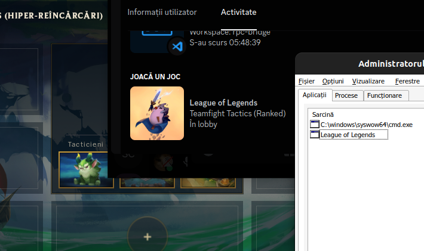
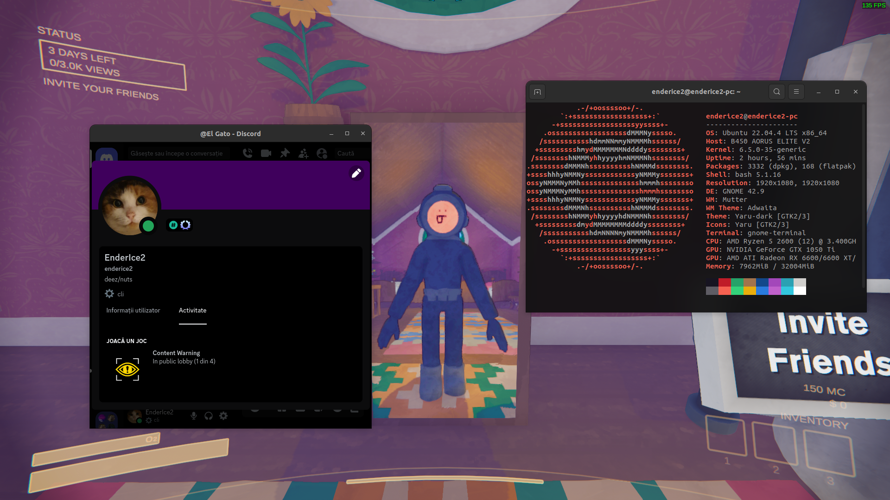
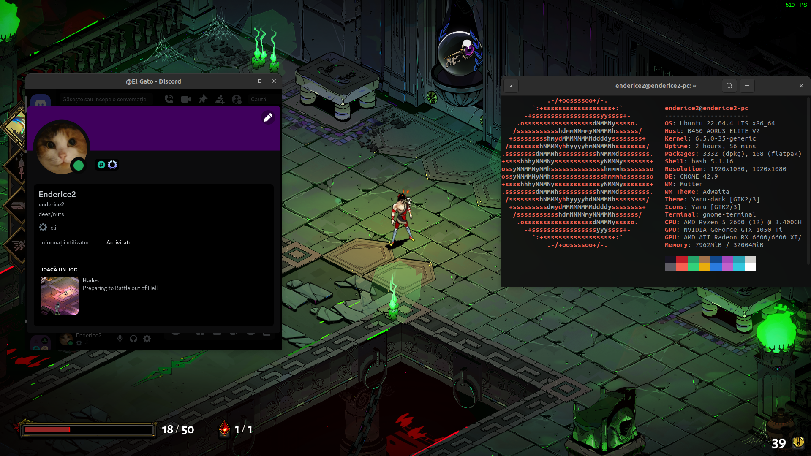
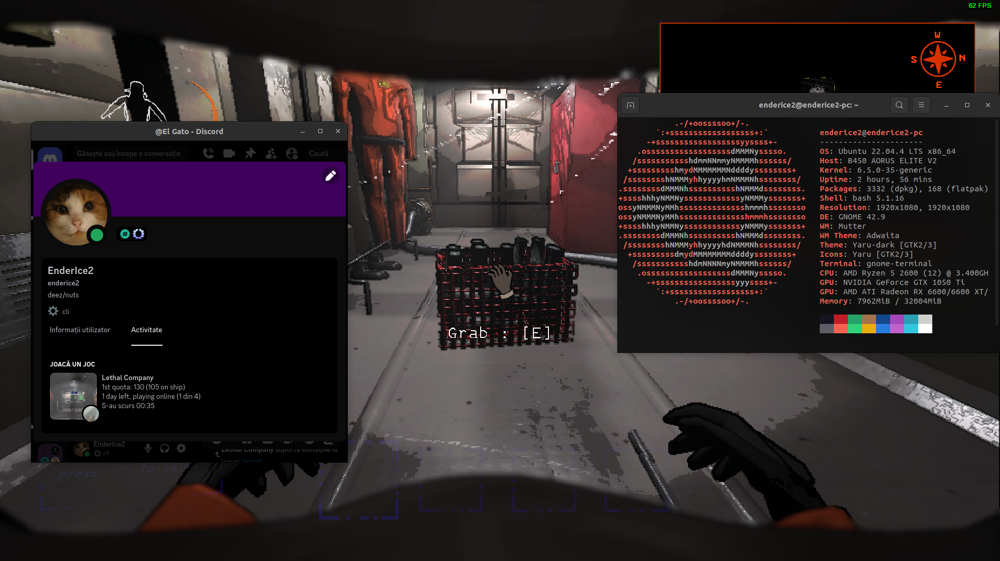
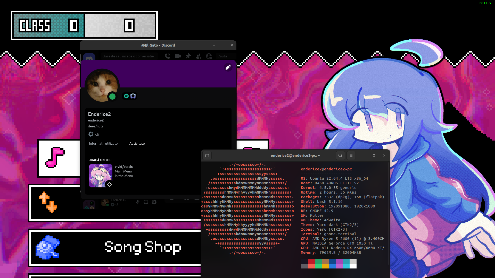

Discord RPC Bridge for Wine
Simple bridge that allows you to use Discord Rich Presence with Wine games/software on Linux/macOS.
Download latest release Download latest build
Works by running a small program in the background that creates a named pipe \\.\pipe\discord-ipc-0 inside the prefix and forwards all data to the pipe /run/user/1000/discord-ipc-0.
This bridge takes advantage of the Windows service implementation in Wine, eliminating the need to run it manually.
These docs are for the latest stable release.
For v1.0, see the original README.
Known Issues
- If you use Vesktop Some games may not show up in Discord. This is because Vesktop uses arRPC, which it doesn't work with some games #4. This is not an issue with the bridge.
My game is not showing up in Discord
If your game is not showing up in Discord, please check the following:
-
The game you are playing has Rich Presence support!
- Some games may not have this feature. It's up to developers of the game to implement it.
This is not an issue related to the bridge.
- Some games may not have this feature. It's up to developers of the game to implement it.
-
You followed the installation steps correctly.
-
You are using the latest version of the bridge. Currently is
.
I still want to see the game in Discord!
This is outside the scope of this project, but here are some workarounds:
- You can manually add the game to Discord by going to
User Settings >underActivity SettingsinRegistered Gamestab. Official Article- Tip: You can rename the game to whatever you want.
Compiling from source
- Install the
wine,gcc-mingw-w64andmakepackages. - Open a terminal in the directory that contains this file and run
make. - The compiled executable will be located in
build/bridge.exe.
Examples
League Of Legends running under Wine using Lutris

Among Us on Steam

Content Warning on Steam

Hades on Steam

Lethal Company (modded) on Steam

vivid/stasis on Steam

Credits
This project is inspired by wine-discord-ipc-bridge.